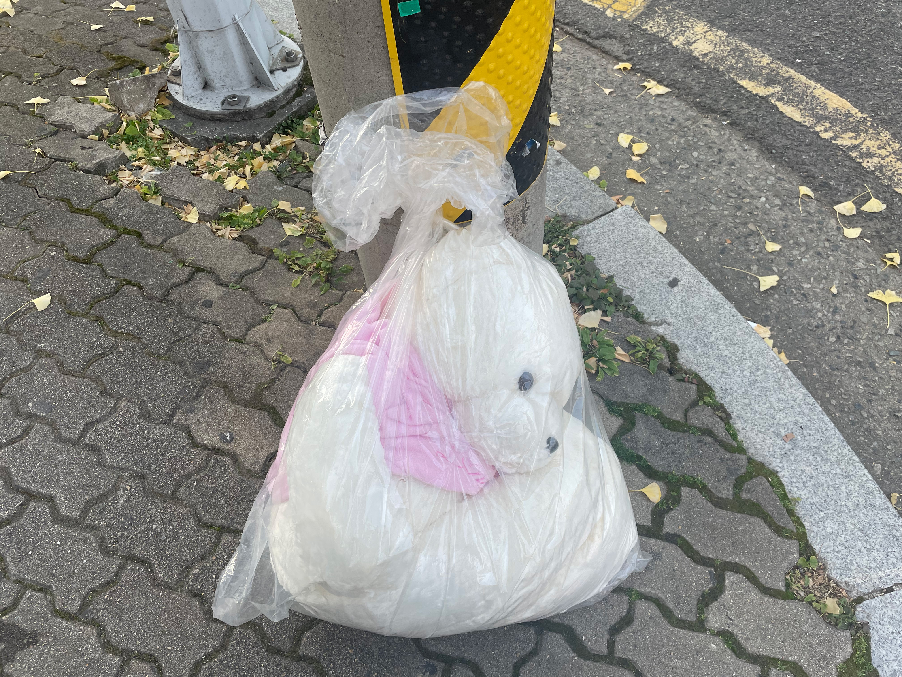
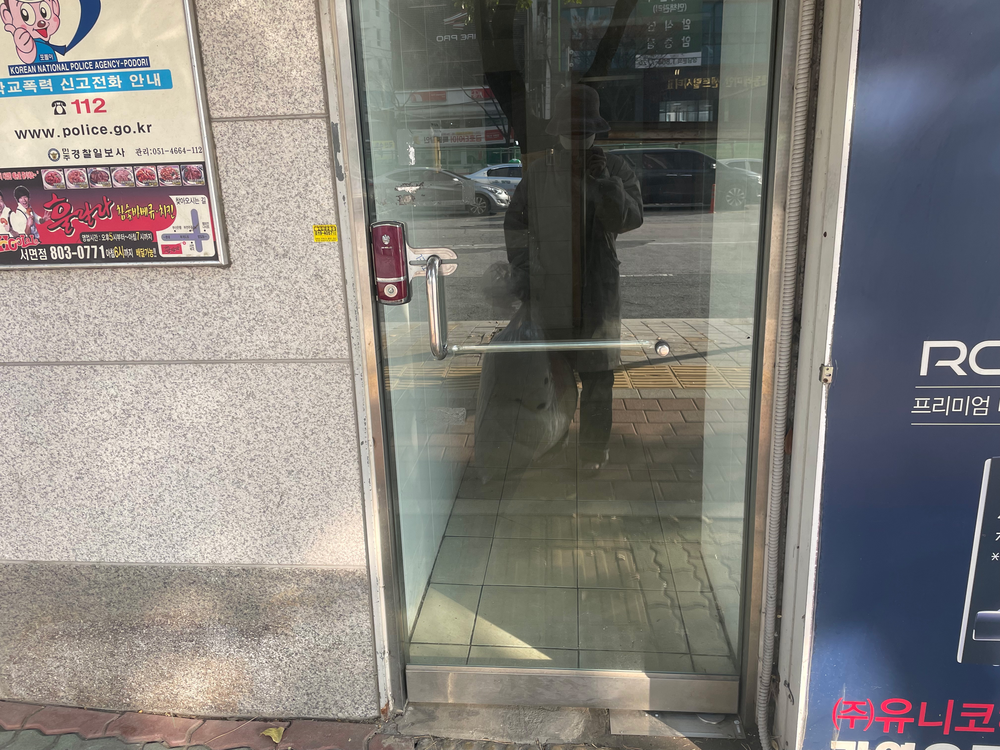

- 생색내기 좋은 곰인형
- 곰인형을 데리고 오면서
- 누구에게 생색을 낼 것인가
- 여행
생색내기 좋은 곰인형을 발견한 나는 그를 만나기 위해 당근 거래를 했다.
생색내기 좋은 곰인형을 발견한 나는 그를 만나기 위해 당근 거래를 했다.
생색내기 좋은 곰인형을 발견한 나는 그를 만나기 위해 당근 거래를 했다.
생색내기 좋은 곰인형을 발견한 나는 그를 만나기 위해 당근 거래를 했다.
생색내기 좋은 곰인형을 발견한 나는 그를 만나기 위해 당근 거래를 했다.
생색내기 좋은 곰인형을 발견한 나는 그를 만나기 위해 당근 거래를 했다.
 
당근이신가요?
생색내기 좋은 곰인형이라는 것이 따로 있는 것인가?


노 라멘 노 라이프
라멘이거나 죽거나
좋은 곰인형을 만나고 오는길 나는 어딘가 극단적인 라멘 가게에 들어왔다.
물론 생색내기 좋은 곰인형과 함께